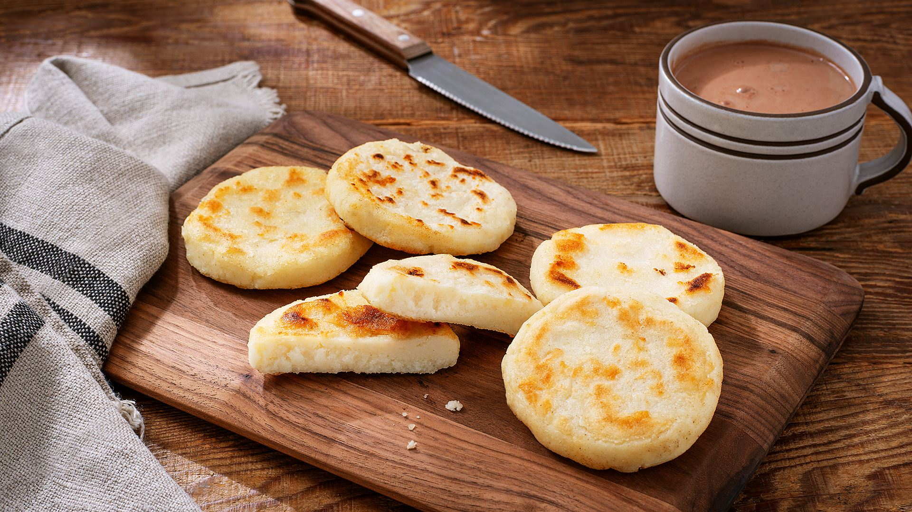

How to make arepas

Description
Arepas are a food found mainly in Colombia and Venezuela, as well as the diaspora around the world. Similar to pupusas, these corn patties let you make your own combination.
Ingredients
- Masa arepa
- Avocado, sliced
- Black beans, drained and rinsed
- Queso fresco, crumbled
- Eggs, scrambled
- Salt
- Cooking oil
Steps
- In a large bowl, mix (by hand!) the masa arepa and a pinch of salt with water in a roughly 1:1 ratio until the texture is right.
- Cover the bowl with a towel and let the masa sit for 5 minutes.
- In a large skillet, start heating the cooking oil on high heat.
- When the masa is ready, start forming it into balls, then flatten them into patties about half an inch thick.
- The dough should not be so dry it cracks but not so wet it sticks to your hands too much.
- Add more water or more masa as needed to get the consistency right.
- Preheat the oven to 400 degrees F
- Fry the patties a few minutes on each side until firm.
- Some char marks are totally fine here!
- When all the arepas have been fried, put them on a baking sheet in the oven for ~15 minutes.
- When they are done baking, enjoy!
- Slice them open horizontally, creating a pocket.
- Fill with the avocado, eggs. black beans, and queso to your liking.
- Eat them and be happy :)
Feel free to experiment with other types of fillings (just never peanut butter or tomatoes)